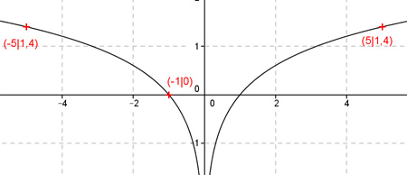

Aufgabe 85 Ergänzen Sie die Wertetabelle für den Graphen: y = lg x2 x -1 5 oder -5 y 0 1,4 f(-1) = lg (-1)² = lg 1 = 0 f(x) = 1,4 eingesetzt: 1,4 = lg x2 --> x2 = 101,4 = 25,1 |√ x = 5 oder -5 gerundet 